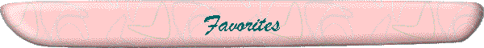
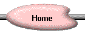
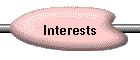
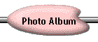

|
   
|
|
Make a list of your favorite sites on the World Wide Web.
You can add a hyperlink to another web site, or replace an existing one, by selecting the
text and choosing the Hyperlinks command from the Insert menu.
|